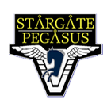
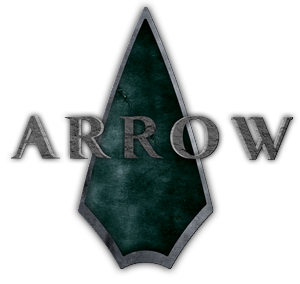

|  |
Stargate PegasusStargate Pegasus est un site sur la franchise Stargate qui rassemble les trois séries télévisées: Stargate SG1, Stargate Atlantis et Stargate Universe. www.stargate-pegasus.com |
|  |
Green Arrow FranceGreen Arrow France est un site sur la série télévisée Arrow tirée de l'univers DC Comics dans laquelle on suit les aventures d'Oliver Queen alias Green Arrow. www.green-arrow-france.fr |
The Flash FranceThe Flash France est un site sur l'univers de la série télévisée The Flash, à travers laquelle on suit les péripéties du héros de DC Comics Barry Allen, dôté d'un vitesse incroyable. www.the-flash-france.fr |
|
Application ChocogrenouilleL'application Chocogrenouille est une application qui permet de se prendre en photo avec sa caméra de son téléphone ou sa webcam puis de la transformer en une carte Chocogrenouille comme celles de l'univers Harry Potter. |